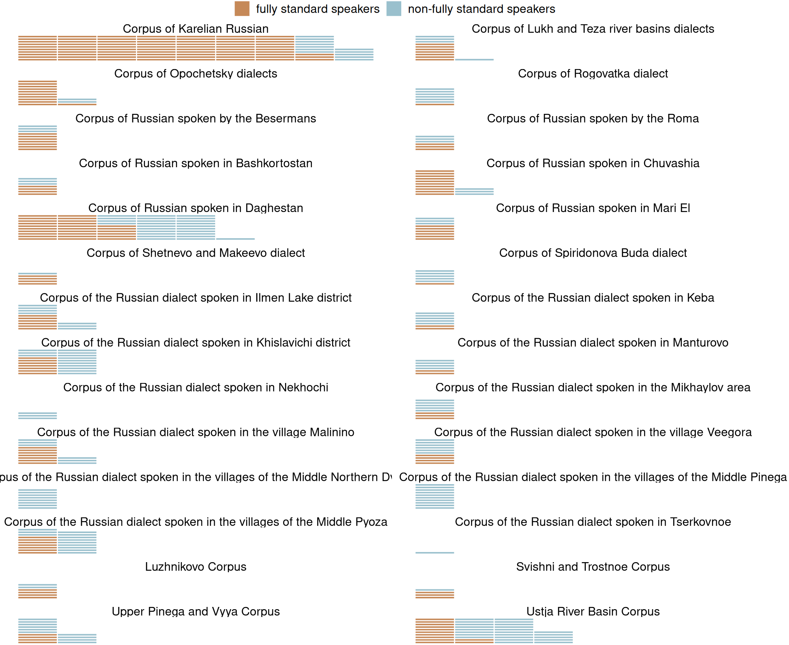
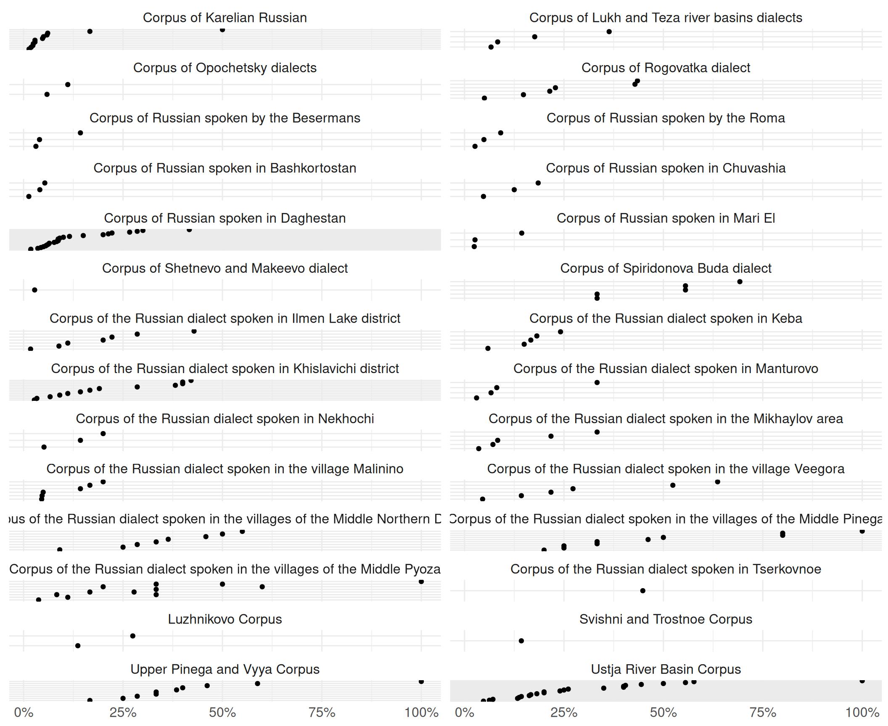

Atlas of variation in spoken varieties of Russian
Features
Numeral construction
Author
Chiara Naccarato, Svetlana Zemicheva
Published
December 1, 2024
Here will be short text
Non-fully standard speakers
Map
Variation
Raw data

